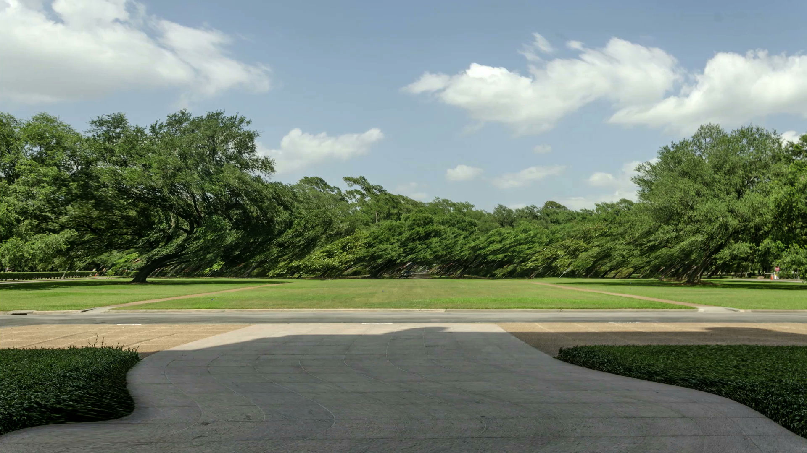
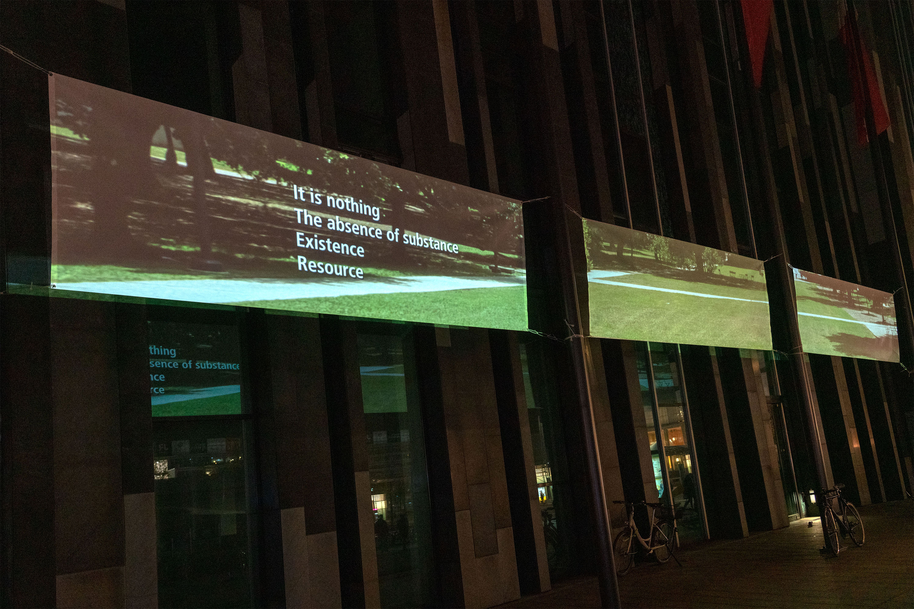

Field of Depth
2018-19
3 channels digital video
Vues d'installation à l'Académie des Beaux-arts de Leipzig
Pour Field of Depth, j'ai effectué une recherche de paysages des campus universitaires publics et privés à Houston afin d'aborder le thème du système financier des établissements d'enseignement supérieur en Amérique du Nord.
Évoluant de manière semblable à un diaporama où les photographies du campus sont montrées les unes après les autres, l'œuvre évoque la dimension de la profondeur physique dans la construction des paysages. Elle s'intéresse à la capacité de communication inhérente aux structures des espaces et à la signification que ces aménagements transmettent. L'architecture, l'aménagement du territoire, les territoires kilométriques et les champs vastes diffusent-ils un espace ouvert à tous ou plutôt le privilège, la richesse et l'exclusivité ?
Ce travaille fait un rappel à la construction spatiale qui dominait la vision à la Renaissance : la perspective linéaire. Pendant la Renaissance, le concept de l'infini a été introduit pour la première fois dans le paradigme visuel sans être affilié à la divinité. Les lignes composant la perspective pointent vers vers la dimention infini de l'espace. Dans Field of Depth la dimension inhérente à l'infini de la profondeur rapelle la "dette". La dette (financière) devient une structure de pouvoir. Elle exige un comportement conforme de l'individu, où il doit consentir aux règles édictées par l'institution.
Apparaissant sur les trois écrans, le texte ajouté au montage est une expérience poétique. Il traite du paradigme de la profondeur et de la dette


Vues d'exposition sur on Augustusplatz, Centre ville de Leipzig, lors de l'exposition collective Reading the Cities